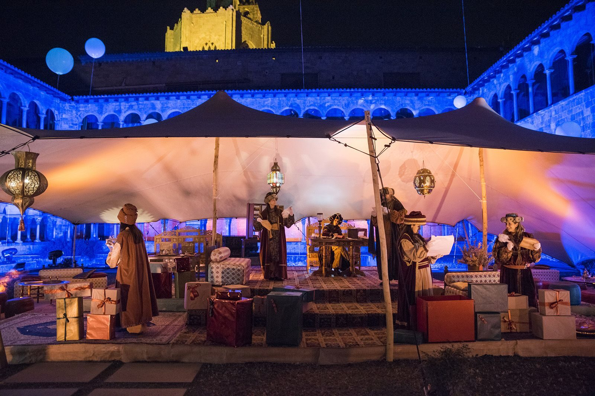
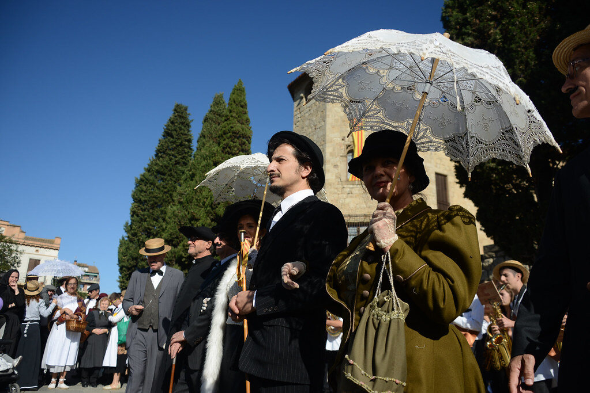
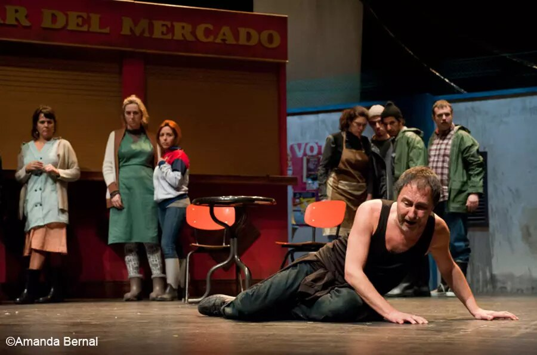

Direcció escènica
Direcció escènica per a ajuntaments, museus, comissions de festa i companyies: cultura popular, itineraris teatralitzats, recreacions històriques i espectacles a mida del territori.
Què faig
Direcció escènica d'actes de festa major i cicle festiu: parlaments, balls parlats, cercaviles teatralitzades i cerimònies. La festa com a espectacle col·lectiu que dignifica la tradició.
Itineraris teatralitzats, visites dramatitzades i recreacions històriques que converteixen el patrimoni en experiència viva, amb rigor documental i ofici escènic.
Direcció i adjuntia de direcció per a companyies professionals i amateurs: sarsuela, clown, teatre de text. Mirada externa que ordena i potencia el que el grup ja té.
Muntatges amb grups amateurs, entitats i col·lectius: el teatre com a eina de cohesió, amb l'experiència de vint anys dirigint grups de totes les edats.
Seleccio de projectes
Visita teatralitzada. Producció artística de tot el projecte — Museu de Sant Cugat
Direcció escènica — Comissió de Sant Antoni de Sant Cugat
Direcció escènica — Ajuntament de Sant Cugat
Direcció dels itineraris teatralitzats — Museu de Sant Cugat
Direcció de la recreació històrica — Ajuntament de Sant Cugat
Direcció de la cercavila teatralitzada — Ajuntament de Sant Cugat
Direcció. Espectacle de clown — Companyia Va de Nassoos
Direcció escènica i adjuntia de direcció — Companyia + Sarsuela
Direcció escènica — Comissió de Carnestoltes de Sant Cugat
La feina, per dins



Parlem-ne
Cada encàrrec comença amb una conversa: què voleu explicar, a qui i amb quins mitjans. A partir d'aquí, l'ofici.
✉ roger@metromatic.net Conèixer la trajectòria